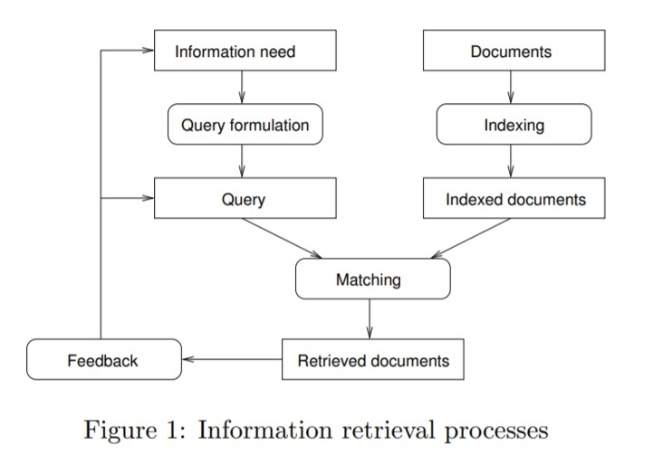
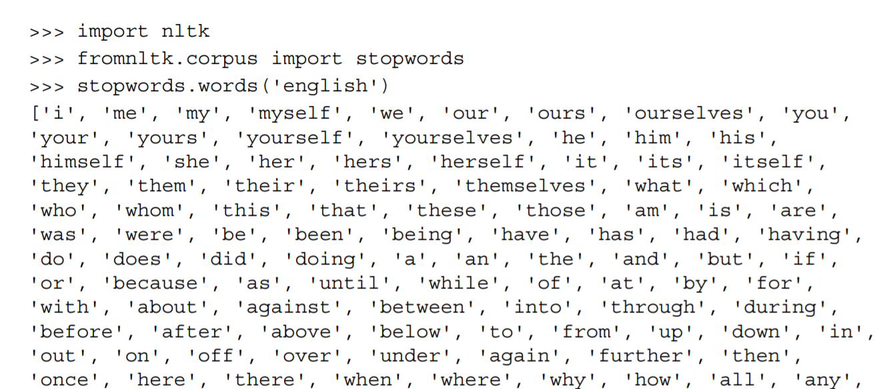
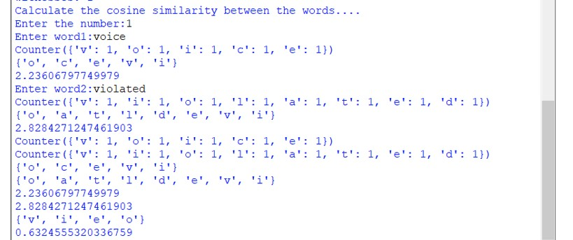

Information retrieval is the process of retrieving the most suitable information as a response to the query being made by the user. In information retrieval, the search is performed based on metadata or context-based indexing. An indexing mechanism is used by the information retrieval algorithm. The indexing mechanism used is known as an inverted index. An IR system builds an index post-list to perform the information retrieval task. Boolean retrieval is an information retrieval task in which a Boolean operation is applied to the post-list in order to retrieve relevant information. The accuracy of an information retrieval task is measured in terms of precision and recall. While performing information retrieval, it is important to detect the stop words in a document and eliminate them.

In this project we implemented a suitable mechanism to identify the stop words and use them effectively in a given context to complete the information retrieval through the process of Vector Space Model.


Thank You!!